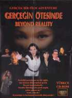

Oyun Hakkında
Sessizliği parçalayan acı bir çığlık,
onu masum dünyasından ayırdı.
Heryer kan içindeydi.
Kendisi ölmediği için şanslı mıydı, yoksa şanssız mı ?
Artık yalnızdı !
Karanlığın ve korkunun fantastik dünyasında !
onu masum dünyasından ayırdı.
Heryer kan içindeydi.
Kendisi ölmediği için şanslı mıydı, yoksa şanssız mı ?
Artık yalnızdı !
Karanlığın ve korkunun fantastik dünyasında !
Geliştirici: Cartoon Animasyon Stüdyoları
Yayın Yılı: 1997
Platform: PC CD-ROM (MS-DOS / Windows)
Tür: Macera (Adventure)